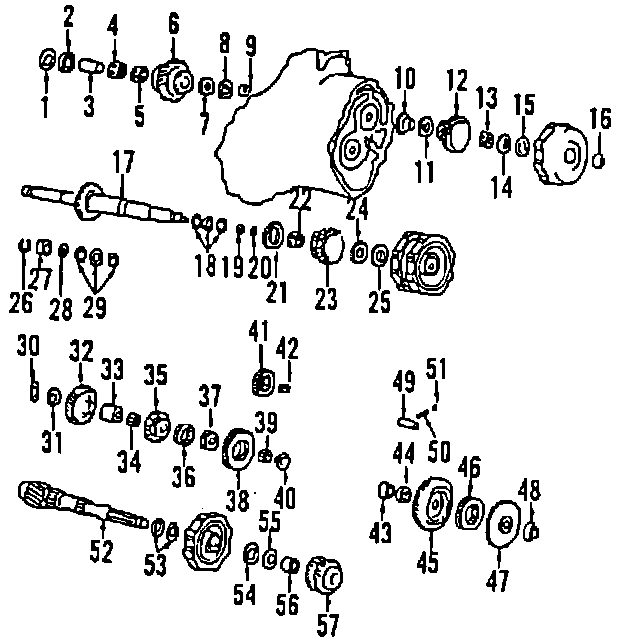
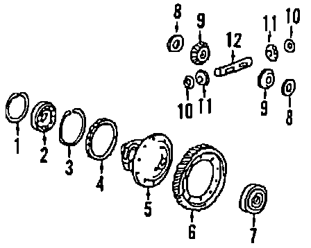
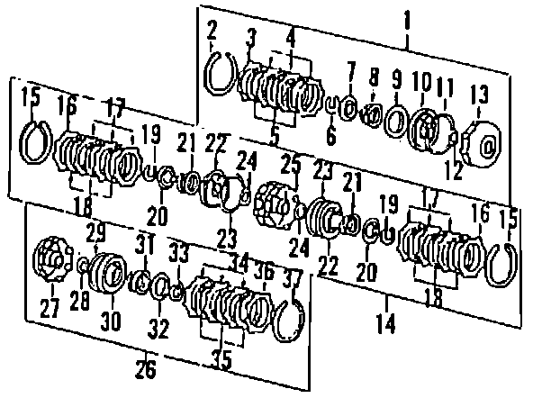

Operation CHARM
: Car repair manuals for everyone.
Home
>>
Acura
>>
1987
>>
Integra L4-1590cc 1.6L DOHC FI
>>
Parts and Labor
>>
Transmission and Drivetrain
>>
Automatic Transmission/Transaxle
>>
Images
Images
Case & Related Parts:
Mainshaft:

Countershaft:
Differential:

Clutch:
